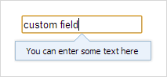
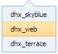
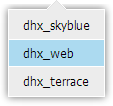
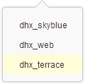

Table of Contents
Operations with dhtmlxPopup
In this chapter you will know how:
Managing dhtmlxPopup visibility
To manage dhtmlxPopup visibility you have 3 methods:
- show() - shows a dhtmlxPopup object
- show(id) - when the pop-up window attached to a form or toolbar, shows the pop-up window near the item with the specified ID (for radio buttons you should specify [id,value])
- show(left, top, width, height) - shows the pop-up window near the specified area
- hide() - hides a dhtmlxPopup object
- isVisible() - checks whether the pop-up window is currently hidden or shown. Returns true if the pop-up is visible
Let's consider as an example of usage these methods - attaching dhtmlxPopup to a custom object when you need to manually regulate showing/hiding of the pop-up window:

<input type="text" onclick="showPopup(this);" onblur="hidePopup();" value="click"> <script> function showPopup(inp) { if (!myPop) { myPop = new dhtmlXPopup(); myPop.attachHTML("You can enter some text into here"); } if (myPop.isVisible()) { myPop.hide(); } else { var x = getAbsoluteLeft(inp); // inner dhtmlx method, return left position var y = getAbsoluteTop(inp); // inner dhtmlx method, return top position var w = inp.offsetWidth; var h = inp.offsetHeight; myPop.show(x,y,w,h); } } function hidePopup() { if (myPop) myPop.hide(); } </script>
Setting the skin
The library provides 3 predefined skins:
| 'dhx_skyblue' | 'dhx_web' | 'dhx_terrace' |
|---|---|---|
|  |  |  |
To set the skin for a dhtmlxPopup object you should use the setSkin method.
var myPop = new dhtmlXPopup( ... ); myPop.setSkin("dhx_web");
The following order is used to determine the skin on load:
- the skin parameter of the dhtmxlPopup object constructor
- the dhtmlx.skin property
- the form/toolbar skin (if the pop-up window is attached to a form or toolbar)
- dhtmlxPopup tries to detect the skin automatically (each skin css file has a corresponding record to help to detect the skin)
- the default “dhx_skyblue” skin is used
For example, if you include on the page the only css file - “dhxpopup_dhx_terrace” - and instantiate dhtmlxPopup without specifying the skin parameter, then the “dhx_terrace” skin will be detected automatically.